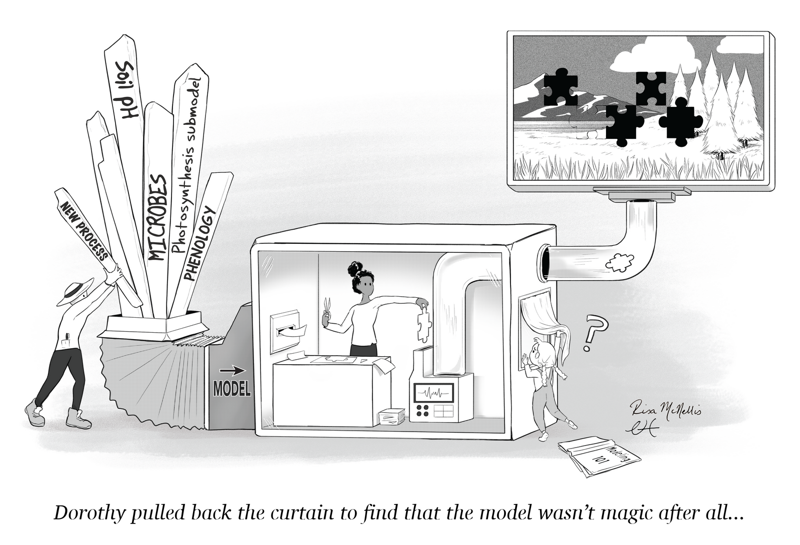

Contents under construction

Ecology in Earth System Models
Field ecology and global-scale modeling are often isolated from one another, but they don't have to be!
One challenge is that empirical and modeling ecological research is often separated. Empirical data is collected and published without practical knowledge of how it might be integrated into a model. Modelers translate empirical data into process representations without understanding the uncertainties in data collection or processing. Often, there is little communication.
When empiricists and modelers work together to design data collection and develop process representations, it improves both aspects of research.
Text about modeling across scales